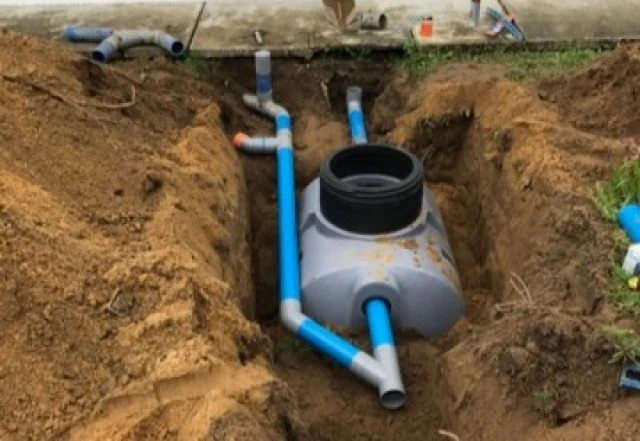

Vidange de bac à graisse en Seine-et-Marne (77)

Qu’est-ce qu’un bac à graisse et pourquoi le vidanger ?
En Seine-et-Marne, la vidange d’un bac à graisse est indispensable pour éliminer les résidus graisseux et éviter l’obstruction des canalisations. Ce service est essentiel en restauration, mais aussi chez les particuliers utilisant des équipements spécifiques.
Installation professionnelle de bac à graisse dans le 77
Nous proposons la pose de bacs à graisse conformes aux normes pour les professionnels et les particuliers. Notre équipe intervient dans tout le département pour une mise en place efficace et sécurisée.
Fréquence idéale de nettoyage
Un entretien régulier est essentiel pour éviter les désagréments : odeurs, débordements ou colmatage. Nous vous recommandons une vidange tous les 6 à 12 mois, selon l’intensité d’utilisation.
Prix d'une vidange dans le 77
Le coût varie selon la taille et l'accessibilité du bac. Obtenez votre devis personnalisé ou contactez-nous directement au 01 69 52 00 23.
QUESTIONS FREQUENTES SUR LES BACS A GRAISSE
Un bac a graisse est un dispositif qui separe les graisses et huiles des eaux usees avant leur rejet dans le reseau d'assainissement. Il est obligatoire pour les restaurants et certains etablissements professionnels.
La frequence depend de l'utilisation. Pour un restaurant, une vidange tous les 1 a 3 mois est generalement necessaire. Pour un particulier, une vidange annuelle peut suffire.
Un bac non entretenu provoque des mauvaises odeurs, des debordements et peut boucher vos canalisations. Vous risquez egalement des sanctions en cas de controle sanitaire.
Les dechets sont transportes vers des centres de traitement agrees. Nous vous fournissons un bordereau de suivi des dechets attestant de leur elimination conforme a la reglementation.
Oui, nous assurons la pose de bacs a graisse conformes aux normes en vigueur. Nous vous conseillons sur le dimensionnement adapte a votre activite et realisons l'installation complete.